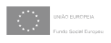

<footer fxLayout="column" fxLayoutAlign="start center">
  <nav
    fxLayout="row"
    fxLayoutAlign="center center"
    id="linksRow"
    aria-label="Menu de conformidade do acessibilidade.gov.pt"
  >
    <ul>
      <li><a href="./acessibilidade">{{ "FOOTER.accessibility" | translate }}</a></li>
      <li>
        <a
          href="https://www.ama.gov.pt/web/agencia-para-a-modernizacao-administrativa/politica-de-privacidade"
          >{{ "FOOTER.privacy" | translate }}</a
        >
      </li>
      <li><a href="https://github.com/amagovpt/access-monitor-plus" target="_blank">Github</a></li>
      <li><a href="./#">{{ "FOOTER.options" | translate }}</a></li>
    </ul>
  </nav>
  <div fxLayout="row" fxLayoutAlign="center center" id="logosRow">
    
    
    
    
    
    <div>
      <a href="https://selo.acessibilidade.gov.pt/" target="_blank"
        ></a>
    </div>
  </div>
  <div fxLayout="row" fxLayoutAlign="center center" id="cpyrgtRow">
    © 2020 AMA -&nbsp;
    <a href="http://www.acessibilidade.gov.pt" target="_blank">{{
      "FOOTER.link" | translate
    }}</a
    >&nbsp;
    {{ "FOOTER.rights" | translate }}
  </div>
</footer>
